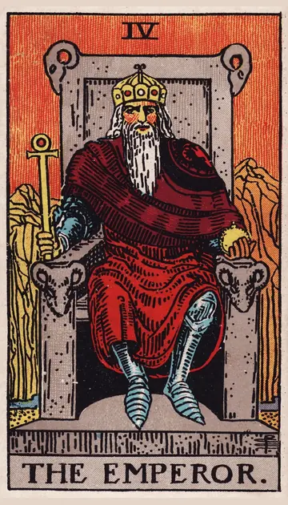

正位置皇帝の正位置
キーワード：安定・責任・リーダーシップ
恋愛
誠実で安定した関係を築いていける時です。
相手の気持ちあなたとの関係を、真剣に考えているようです。
この先関係が安定し、将来を考えられる段階に進みそうです。
アドバイス将来のことを、相手と具体的に話し合ってみましょう。
気をつけること自分のやり方を押しつけすぎないように気をつけて。
この先関係が安定し、将来を考えられる段階に進みそうです。
アドバイス将来のことを、相手と具体的に話し合ってみましょう。
気をつけること自分のやり方を押しつけすぎないように気をつけて。
人間関係
あなたがまとめ役になることで、場が落ち着きます。
相手の気持ちあなたを頼りになる存在だと感じているようです。
この先周りから頼られ、信頼される立場になりそうです。
アドバイス決めるべきことは、あなたからはっきり伝えましょう。
気をつけること正しさにこだわりすぎると、相手が窮屈に感じることも。
この先周りから頼られ、信頼される立場になりそうです。
アドバイス決めるべきことは、あなたからはっきり伝えましょう。
気をつけること正しさにこだわりすぎると、相手が窮屈に感じることも。
仕事・学業
計画どおりに進め、責任ある立場で力を発揮できる時期です。
この先努力が認められ、評価や立場につながりそうです。
アドバイス目標と期限を決めて、計画的に進めましょう。
気をつけること一人で抱え込みすぎず、人に任せることも考えて。
アドバイス目標と期限を決めて、計画的に進めましょう。
気をつけること一人で抱え込みすぎず、人に任せることも考えて。
お金
計画的に、お金を管理できる時です。
この先堅実な管理が、安定につながりそうです。
アドバイス予算を決めて、その範囲で使いましょう。
気をつけること管理にこだわりすぎて、楽しみまで削らないように。
アドバイス予算を決めて、その範囲で使いましょう。
気をつけること管理にこだわりすぎて、楽しみまで削らないように。
生活
規則正しく、安定した暮らしを送れる時です。
この先生活の土台が、しっかり固まりそうです。
アドバイス毎日の習慣を決めて、きちんと続けましょう。
気をつけること決まりに縛られすぎて、息苦しくならないように。
アドバイス毎日の習慣を決めて、きちんと続けましょう。
気をつけること決まりに縛られすぎて、息苦しくならないように。
今日の運勢
やるべきことを着実にこなせる、安定した日です。
この先計画どおりに一日を終えられそうです。
アドバイス朝のうちに予定を立てて、そのとおりに動いてみましょう。
気をつけること融通がきかなくなりやすいので、少し余裕を持って。
アドバイス朝のうちに予定を立てて、そのとおりに動いてみましょう。
気をつけること融通がきかなくなりやすいので、少し余裕を持って。
逆位置皇帝の逆位置
キーワード：頑固・支配・不安定
恋愛
主導権をめぐって、ぎくしゃくしやすい時です。
相手の気持ちあなたとの関係の中で、主導権を気にしているようです。
この先歩み寄れれば、関係は再び安定していきそうです。
アドバイス自分が正しいと思うときほど、相手の意見を聞いてみましょう。
気をつけること束縛や決めつけが、相手の負担になっていないか注意を。
この先歩み寄れれば、関係は再び安定していきそうです。
アドバイス自分が正しいと思うときほど、相手の意見を聞いてみましょう。
気をつけること束縛や決めつけが、相手の負担になっていないか注意を。
人間関係
意地の張り合いになりやすい時です。
相手の気持ちあなたとの関係に、少し窮屈さを感じているようです。
この先意地を手放せば、関係は元どおりになりそうです。
アドバイス勝ち負けではなく、お互いが納得できる形を探しましょう。
気をつけること立場を振りかざすと、反発を招きやすい時です。
この先意地を手放せば、関係は元どおりになりそうです。
アドバイス勝ち負けではなく、お互いが納得できる形を探しましょう。
気をつけること立場を振りかざすと、反発を招きやすい時です。
仕事・学業
計画が崩れやすく、立て直しが必要な時期です。
この先計画を立て直せば、また順調に進みそうです。
アドバイス計画を見直し、無理のない目標に立て直しましょう。
気をつけること強引な進め方は、周りの協力を失いかねません。
アドバイス計画を見直し、無理のない目標に立て直しましょう。
気をつけること強引な進め方は、周りの協力を失いかねません。
お金
お金の計画が崩れやすい時です。
この先立て直せば、また安定しそうです。
アドバイス予算を見直して、無理のない形にしましょう。
気をつけること見栄での出費に気をつけて。
アドバイス予算を見直して、無理のない形にしましょう。
気をつけること見栄での出費に気をつけて。
生活
生活のリズムが崩れやすい時です。
この先リズムを立て直せば、安定していきそうです。
アドバイス起きる時間だけでも、そろえてみましょう。
気をつけること無理な計画を立てすぎないように。
アドバイス起きる時間だけでも、そろえてみましょう。
気をつけること無理な計画を立てすぎないように。
今日の運勢
思いどおりに進まず、もどかしく感じる日です。
この先明日は今日より落ち着いて過ごせそうです。
アドバイス予定どおりにいかなくても良しとする、心の余裕を。
気をつけることイライラが態度に出やすいので、深呼吸を忘れずに。
アドバイス予定どおりにいかなくても良しとする、心の余裕を。
気をつけることイライラが態度に出やすいので、深呼吸を忘れずに。
このページの文章は、アプリ「ひとやすみタロット」の結果に使っている文章です。アプリでは、あなたの相談や、カードが出た位置（今の状況・これからの流れ・アドバイス）に合わせて、この中から文章を選びます。逆位置の読み方は逆位置のことをご覧ください。